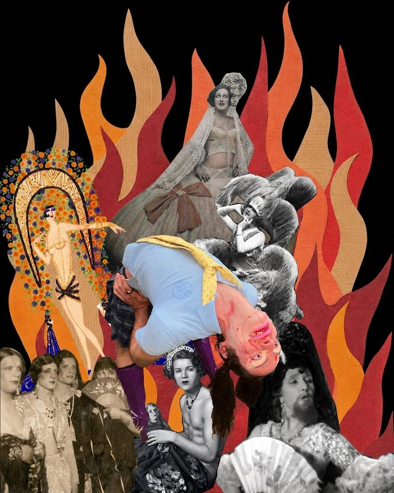
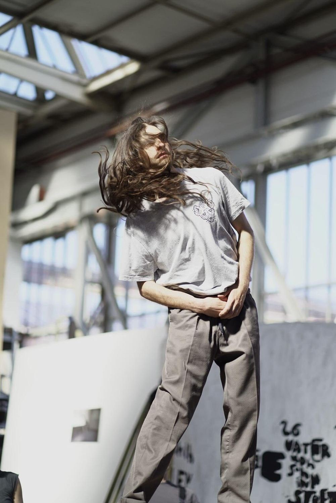
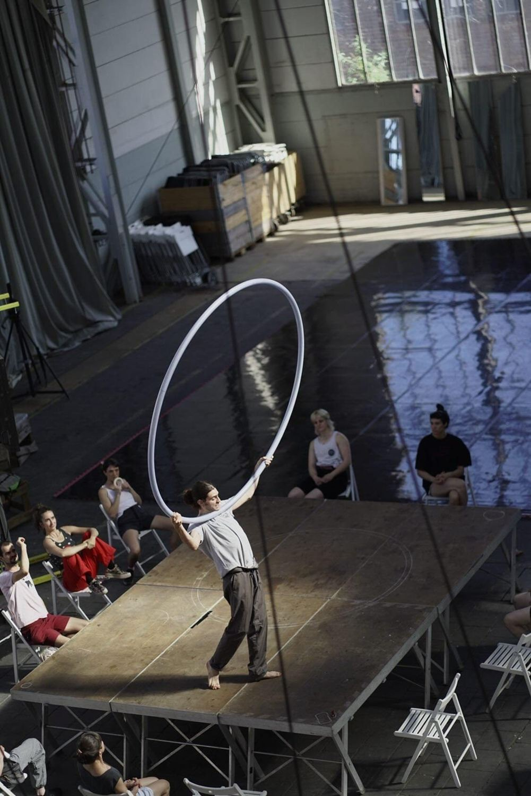
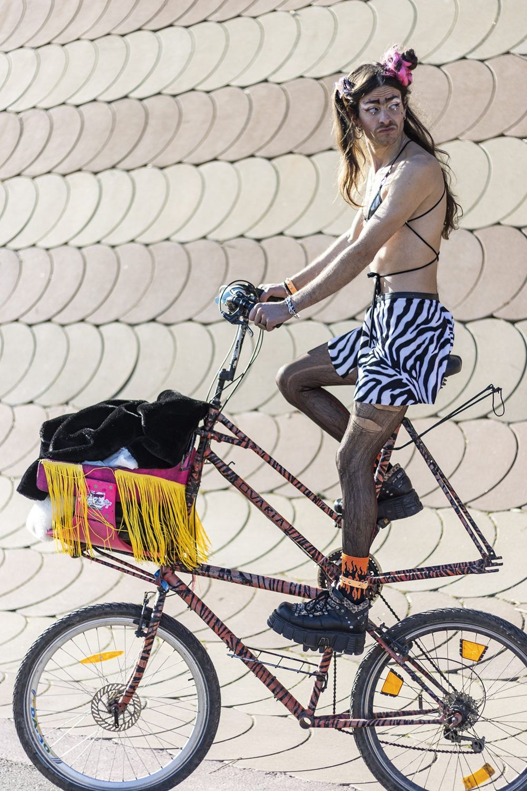
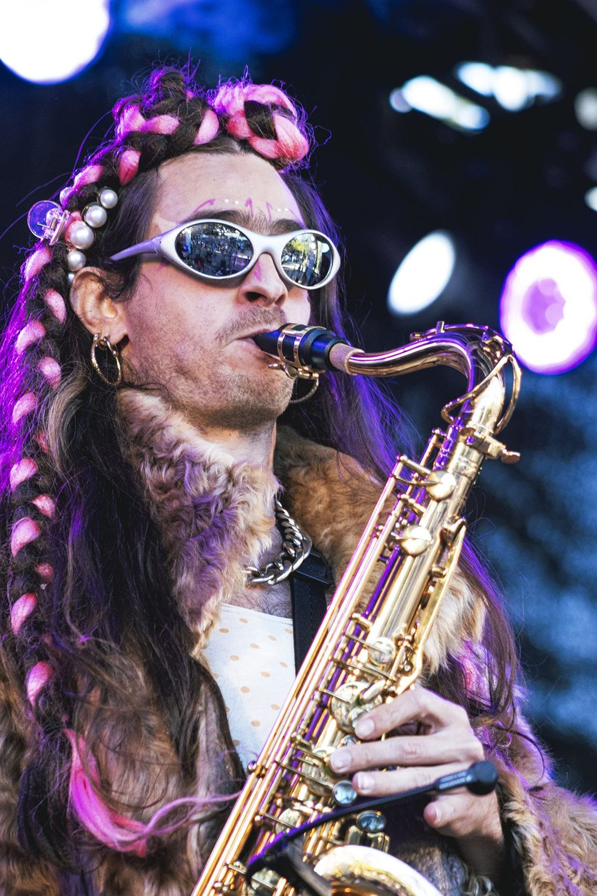
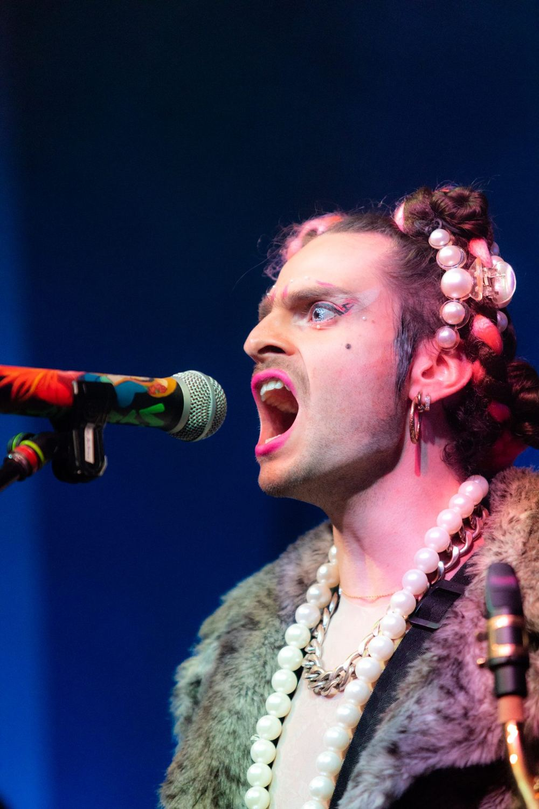
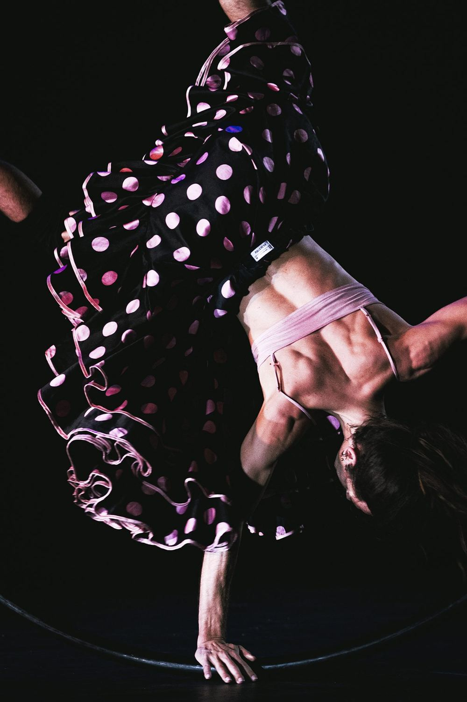
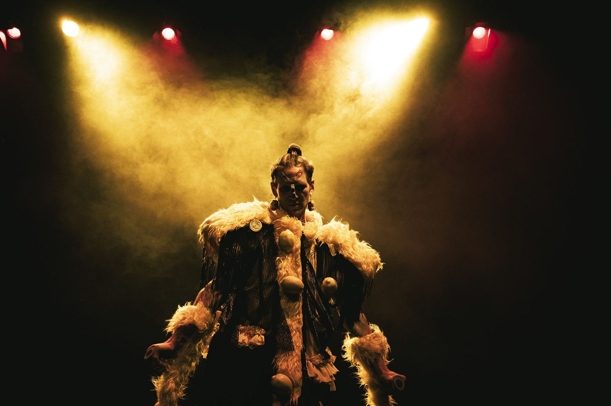
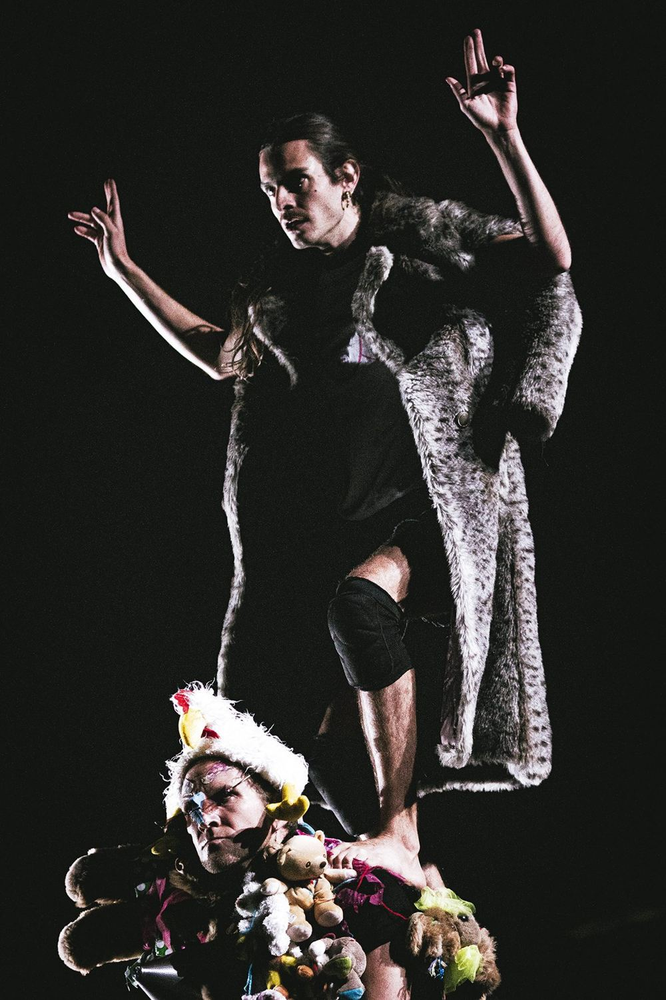

Cia. Victoria Sickness presenta
Ceremonia de circo contemporáneo
✦ Dossier de prensa · 2026
✦ La pieza
Una ceremonia de circo contemporáneo entre la performance y el ritual. El cuerpo travesti ocupa el centro para invocar las memorias queer que las artes escénicas del Estado español han borrado.
El público no mira: participa.
01


✦ La investigación
Invocaciones nace de una investigación escénica sobre el cuerpo travesti que la compañía desarrolla desde la técnica de circo, la creación y la performance.
La pregunta de partida: qué memorias queer han quedado fuera de la historia de las artes escénicas en el Estado español, y cómo un cuerpo en escena puede convocarlas de nuevo. La respuesta toma la forma de una ceremonia, un espacio compartido en el que el público forma parte del rito.
La pieza continúa la línea de trabajo de la compañía sobre los límites del movimiento, el género y la expresión queer.
“Algunas personas no podemos permitirnos el lujo de no poner el cuerpo.”
✦ Proceso de creación
Vídeo del procesoyoutube.com/watch?v=zzgOx4tenbE
Escanea para verlo.
✦ Ficha artística
✦ Apoyos y residencias
Para programadores, festivales y espacios de residencia que quieran acompañar el proceso o programar el estreno: victoriasickness@gmail.com

✦ La compañía
Vic Heredero
Victoria Sickness es el nombre artístico de Vic Heredero, artista de circo que cruza técnica, creación e investigación escénica. Se formó en el Centre de les Arts del Circ Rogelio Rivel (2016–2020), con especialidad en rueda Cyr y acrobacia de suelo, después de estudiar Ingeniería de Sistemas Audiovisuales en la Universidad Carlos III de Madrid.
Desde 2018 es voz principal y saxo tenor de Las Marikarmen, donde también dirige la puesta en escena. Con su compañía ha creado un solo de 12 minutos, el espectáculo de 50 minutos Circografía de una Travesti y la investigación en curso sobre el cuerpo travesti INVOCACIONES.
Imparte talleres de técnica y creación en la escuela Rogelio Rivel, donde dirige un cabaret anual. Dirigió el Circ de Nadal 2024 del Espai de Circ Cronopis (Mataró), participa en la caixa d'eines de La Central del Circ, está en residencia en La Poderosa (2026/27) y ha actuado en Combinat 57 del Ateneu Popular 9 Barris.



✦ Repertorio
Un viaje autobiográfico a la infancia y la adolescencia queer que Victoria no pudo vivir. Un fallo técnico en pleno concierto le arrastra a una realidad paralela donde los peluches de su infancia le guían por su pasado, entre referentes femeninos y la socialización masculina que le fue impuesta.
Rueda Cyr, acrobacia, patines y zancos · música en directo, texto y proyecciones
Ver el vídeoyoutube.com/watch?v=9dBYIIkbDuE


Cia. Victoria Sickness
✦ Contacto · contratación · prensa
victoriasickness@gmail.com